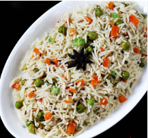

Vegetable Pulao

Description
A fragrant and flavorful rice dish made with a mix of vegetables, spices, and basmati rice. It's a perfect one-pot meal for lunch or dinner.
Ingredients
- Basmati Rice
- Mixed Vegetables (Carrots, Peas, Beans)
- Onion
- Tomato
- Ginger Garlic Paste
- Green Chilly
- Bay Leaf
- Cumin Seeds
- Garam Masala
- Salt
- Oil
- Water
Steps:
- Heat oil in a pan and add cumin seeds and bay leaf.
- Add chopped onion and sauté until golden brown.
- Add ginger garlic paste, green chilly, and chopped tomatoes. Cook until tomatoes are soft.
- Add mixed vegetables and sauté for a few minutes.
- Mix in the rice and garam masala, then add water and salt to taste.
- Cover the pan and cook on low heat until the rice is done and the water is absorbed.
- Fluff the rice with a fork and serve hot.
Back